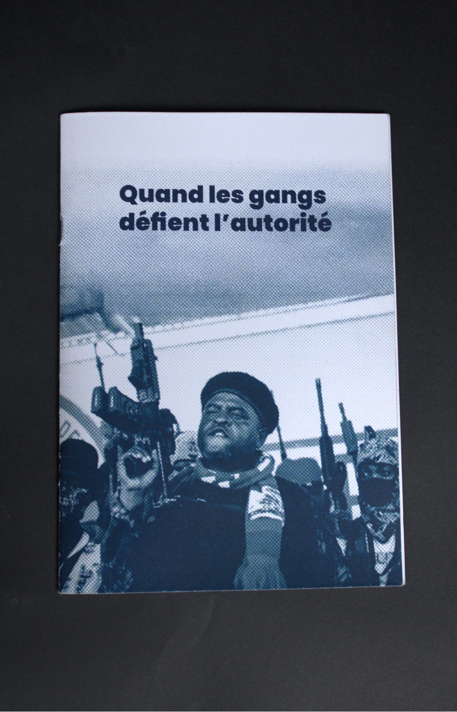
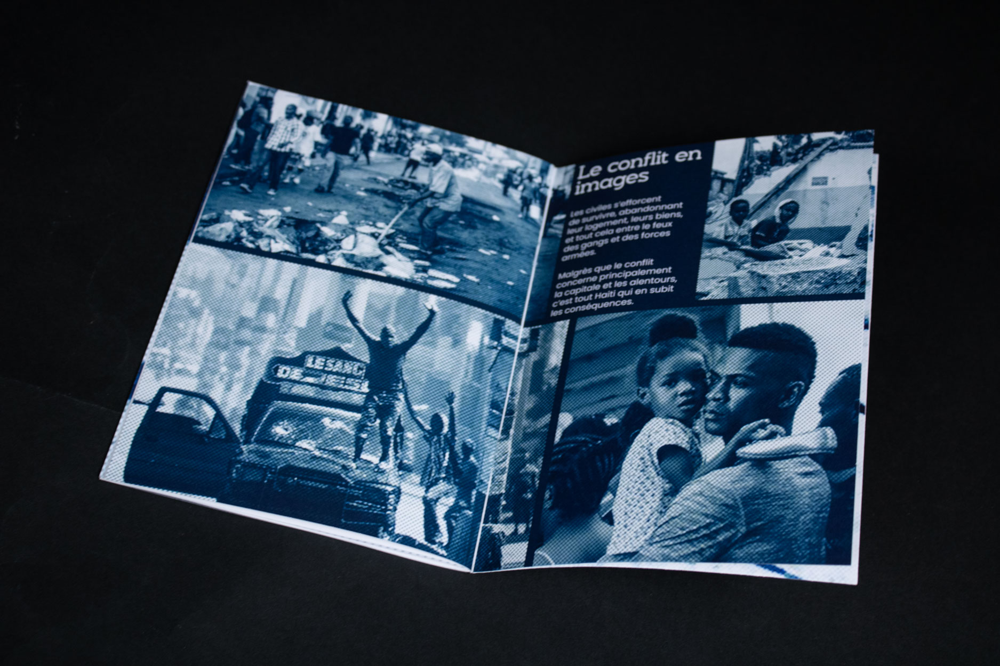
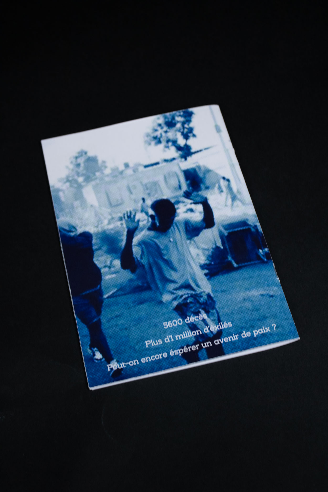
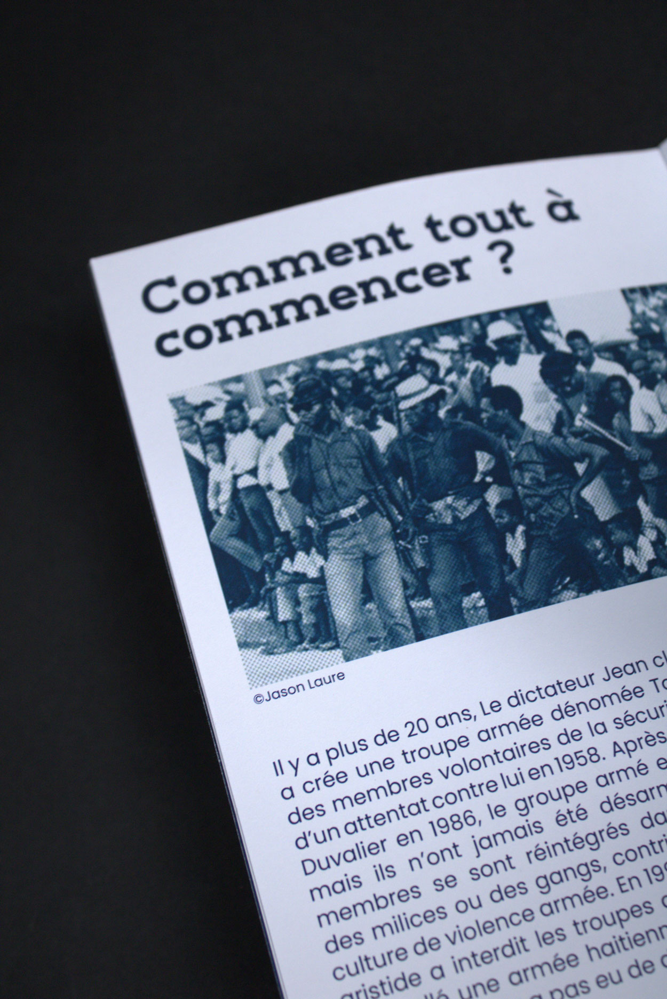
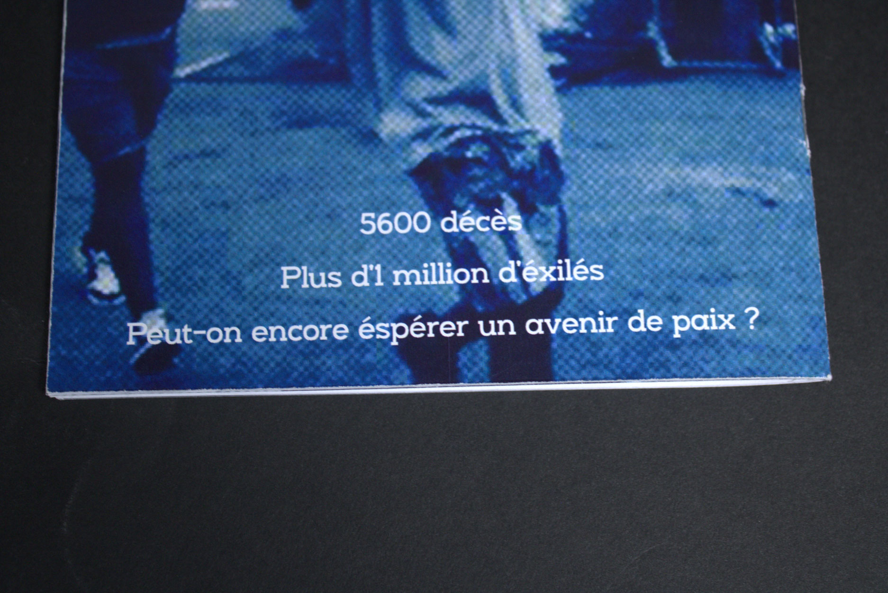
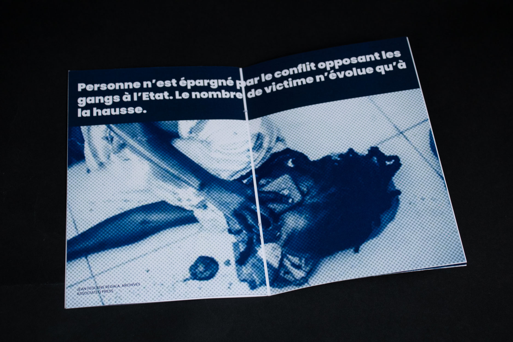

Ce projet est une édition collaborative acev mon camarade Wood-Jerry, d'origine haïtienne. J'ai tout de suite été intéressé par son histoire et sur ce qui se déroulait dans son pays d'origine. Ce projet fut l'occasion de partager nos méthodes de travail et d'en apprendre plus sur l'histoire d'un pays où beaucoup se battent pour survivre, encore de nos jours.
On a pris le parti de présentee l'édition en bichromie, un visuel simple qui met l'accent sur le texte et la compréhension de l'histoire haïtienne.




